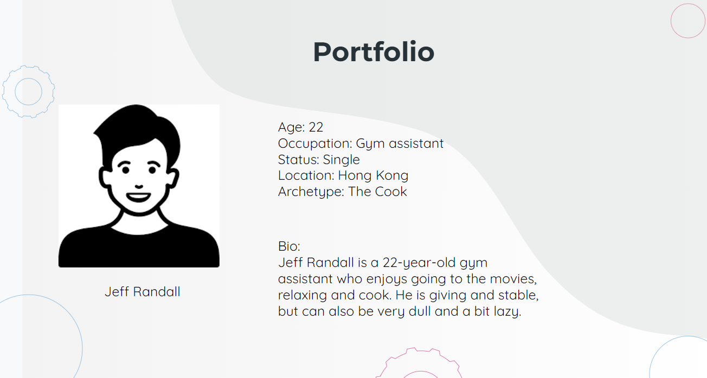
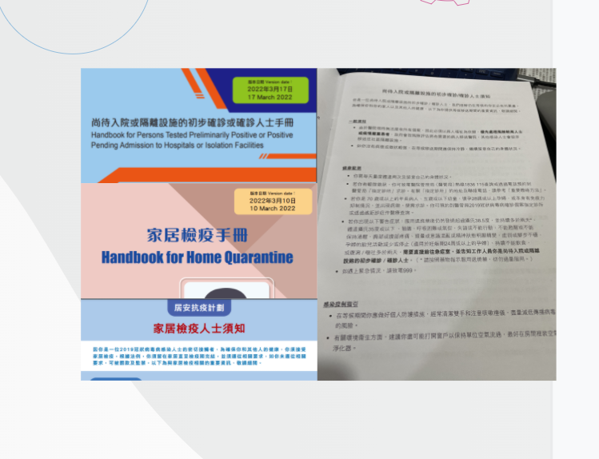
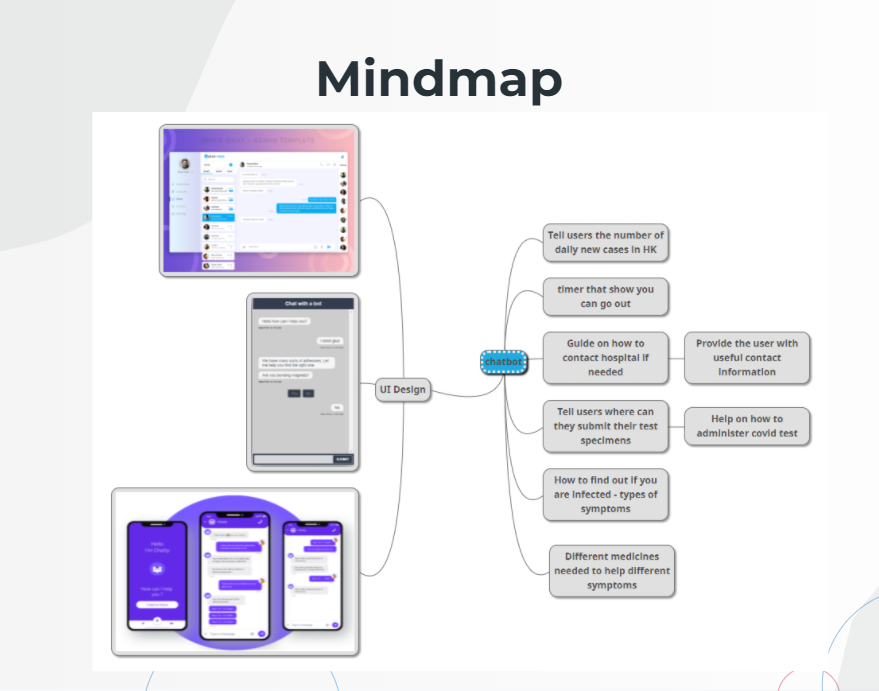
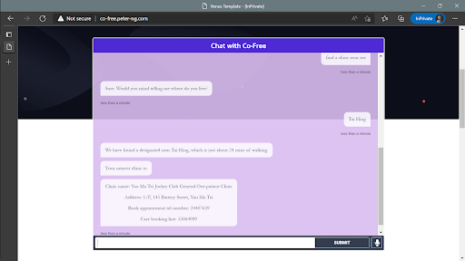
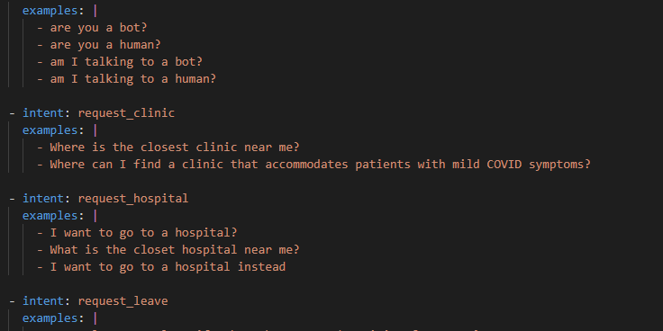
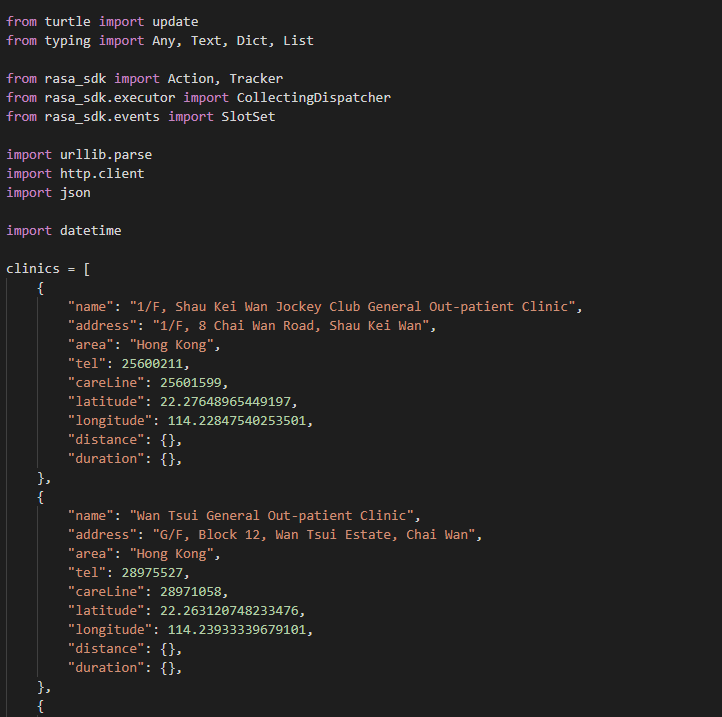

Team Member
Kwan Yeung CHING (Me)
Cheuk Hong Lok
Ka Fai Ng (Peter)
Zahabiya Mamujee
Chi Tak Mak (Derek)
Needfinding


After we talked and interviewed with him, we found out that :
We also realized that :
- People struggle to obtain information about covid and self-qurantine quicky
- People had to screen through bulk soruces of data to order to receive their desired answer
- They want clear instructions and step by step guide on qurantine related procedures
We also realized that :
- The goverment do not have enough work forces to handle large amount of queries
- There should be an automated process to handle queries about qurantine guidelines without the need for people to screen through large amount of text
Mind Map

We come up with 3 designs for the UI, there are the native desktop app UI, the web UI and the mobile app UI respectively.
Finally we decided our bot would be based on website as it is easier to implement within a short period of time.
We also thought of essential features for the chatbot to have. For example, Contact information of targetted hosiptal for covid patient and
guidelines on self-quarantine.
Our Design



- Our design goal for the UI is to attract user to Co-Free at the first glance, therefore we locate the chat interface at the top middle, as well as making sure it is wide and oversized. The design follows simplicity and adapts warm purple color as the
background, ensuring that chat box is comforatble to look at for a prolonged period of time. We only implemented basic features like text field where the text based command can be entered, as Co-Free can only be communicated through text.
-
Function wise, the chatbot is able to answer questions like the hospital's contact information, whether the user can exit the place of isolation, enquiry on the common COVID symptoms,
the lastest covid situation in Hong Kong and few more.
The highlight of Co-Free is its ability to provide the nearest hospital and clinics' contact information base on the user current loaction, we implemented array of clinics containing necessary information to calculate distance between the location entered by the users.
Challenges & Reflection
Designing and coding a chatbot is a completely new experiance to me. Even though we are building Co-Free based on a very newcomers friendly environment which is RASA.
Understanding the process developing from python code to interacting with yml file, to setting up a virtual environment, to running couple severs, and finally able to interact with RASA
was time consuming for me. Fortunately I have groupmates that are able to work on it effeciently, and give me the opportunity to take on the role of making video demo. I realize, when you work as a group, don't force yourself to take the most challenging duty, let ones that are capbable to do it.
Although I have very little video editing experiance before, I found it particularly engaging to use my last little bit of creativity to decorate Co-Free, which at the first glance, looks pretty simple.
I decided to add a storyline to impersonate the helpless and fear that covid patient would feel in real life situatiion. And how they would be reliefed when they found out about Co-Free.
Afterall, I am now clearly understands that, no matter how facny the application looks, only ones that provide actual value to the users can keep their interest to the application.
Regarding the bot itself, I honestly don't think a bot targetting self-quarantine has any practical use, google is too powerful afterall, a small scale bot that doesn't rely on search engines cannot never match the enormus data that google can provide.
Video Prototype
Check out our video!